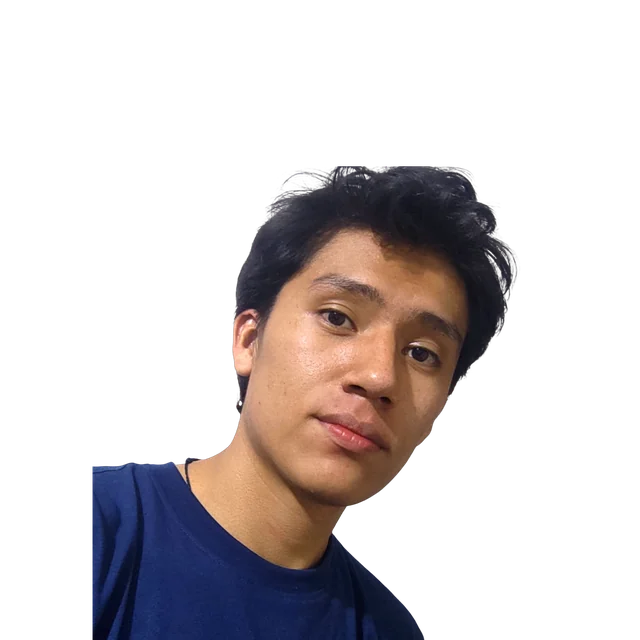

Ing. Leticia Coca
person
Docente titular UMSS
El evento donde tu camino en Informática y Sistemas empieza. Un punto de encuentro para aprender, colaborar y potenciar tus proyectos en comunidad.
Más de dos años conectando estudiantes con la industria y construyendo una red tecnológica sólida, abierta y colaborativa.
Comunidad universitaria
Líderes tech, open source y profesionales.
Construyendo comunidad tecnológica y ciencia de la computación.
Por confirmar.
Profesionales de la industria, investigación y software libre que pasaron por las mismas aulas.
Docente titular UMSS
Ingeniero titular UMSS | Docente investigador Centro MEMI | Autor de 3 libros de Ciencias de la Computación

Graduado con honores de Ing. de Sistemas UMSS | AI Researcher | Competitive Programmer | Jr. Data Scientist & Data Analyst
Gerente general Digital Services | Vicepresidente 2020 Cámara Junior Tunari | Equipo administrativo Twintro
Graduado con excelencia de Ing. de Sistemas UMSS | Ingeniero de Software Backend | Experiencia en soluciones empresariales y bases de datos
Completá el formulario. Tu nodo aparece en el grafo en la próxima sincronización.
Cinco actividades para aprovechar la jornada, de 9:30 a 13:00.
Descubre cómo aprovechar la universidad para construir experiencia, desarrollar habilidades y prepararte desde ahora para tu futuro profesional.
Conoce la programación competitiva, desarrolla tu pensamiento algorítmico y descubre cómo empezar a participar en ICPC en la universidad.
Aprende a crear relaciones profesionales, conectar con estudiantes y expertos, y aprovechar comunidades y eventos para abrir nuevas oportunidades.
Adéntrate en el mundo de la ciberseguridad mediante retos prácticos y descubre cómo desarrollar habilidades resolviendo desafíos tipo Capture The Flag.
Auditorio del Palacio de la Ciencia y Cultura, dentro de la Facultad de Ciencias y Tecnología de la UMSS.
Iniciativas, colectivos y empresas tecnológicas que impulsan y acompañan el crecimiento de los estudiantes en Informática y Sistemas.
Quienes hacen posible SCESI init.
Convierte tu CV en una identidad digital con agentes de IA: entiende tu contexto y tus objetivos, y te acerca las conexiones que de verdad valen tu tiempo.